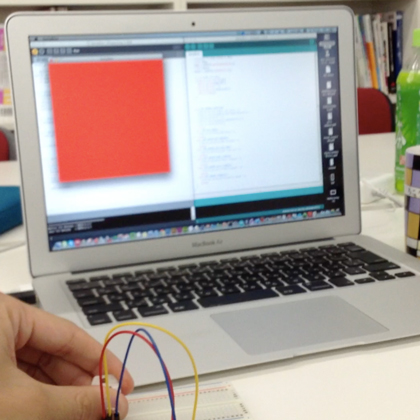
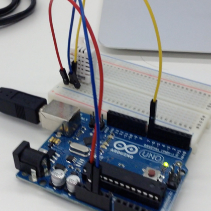
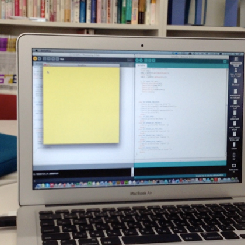
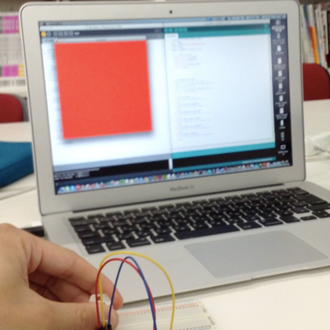
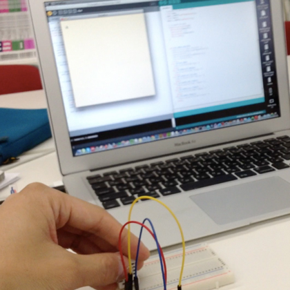

Kousuke Kikuchi
Fab Academy Participant and PhD Candidate
Week 12: Interface and Application Programming
Summary: A Visualization of Environmental Sensor
1. Introduction
Humidity and temperature are the significant factors to determine the confort in space. For example, Disconfort Index is calculated by the following equiation:
DI = 0.81 * temperature + 0.01 * humidity *(0.99 * temperature-14.3) + 46.3;
Because I have not resolve the problem on Serial Communication between computer and ATtiny MCU, I used Arduino for a sensor node.
2. Method
Firstly, I tried the combination of Arduino and openFrameworks. I programmed the same example of DHT22 to Arduino. Also, I used the serial communication example file to check serial communication. However, the result varied due to the speed of the communication. I recognited the importance of "Timing of transmit and receive" in both computer and a sensor node. I quited this method, because I felt the setup of ofSerial was quite difficult due to the bits to be determined.
Secondly, I tried Arduino and Processing. I altered the arduino program that if a sensor receives a message from computer, it sends a data to computer. Also at the processing program, I subscribed that same method, and added mouseClick could send a message to Arduino.
The result of it was the vidio shown above.
3. Programs:
3.1 Arduino
#include <DHT22.h>
// Only used for sprintf
#include <stdio.h>
// Data wire is plugged into port 7 on the Arduino
// Connect a 4.7K resistor between VCC and the data pin (strong pullup)
#define DHT22_PIN 7
// Setup a DHT22 instance
DHT22 myDHT22(DHT22_PIN);
void setup(void)
{
// start serial port
Serial.begin(9600);
//Serial.println("DHT22 Library Demo");
}
void loop(void)
{
DHT22_ERROR_t errorCode;
// The sensor can only be read from every 1-2s, and requires a minimum
// 2s warm-up after power-on.
delay(2000);
//Serial.print("Requesting data...");
errorCode = myDHT22.readData();
switch(errorCode)
{
case DHT_ERROR_NONE:
//success to read sensor's data
float temp;
temp = myDHT22.getTemperatureC();
float humid;
humid = myDHT22.getHumidity();
// if ready for data
if(Serial.available()>0){
Serial.print(temp,DEC);
Serial.print(",");
Serial.println(humid,DEC);
Serial.read();
}
case DHT_ERROR_CHECKSUM:
Serial.print("check sum error ");
Serial.print(myDHT22.getTemperatureC());
Serial.print("C ");
Serial.print(myDHT22.getHumidity());
Serial.println("%");
break;
case DHT_BUS_HUNG:
Serial.println("BUS Hung ");
break;
case DHT_ERROR_NOT_PRESENT:
Serial.println("Not Present ");
break;
case DHT_ERROR_ACK_TOO_LONG:
Serial.println("ACK time out ");
break;
case DHT_ERROR_SYNC_TIMEOUT:
Serial.println("Sync Timeout ");
break;
case DHT_ERROR_DATA_TIMEOUT:
Serial.println("Data Timeout ");
break;
case DHT_ERROR_TOOQUICK:
/Serial.println("Polled to quick ");
break;
}
}
3.2 Processing
import processing.serial.*;
// definition
Serial port;
float temp;
float humid;
float DI;
void setup(){
size(500,500);
//println(Serial.list());
port=new Serial(this,"/dev/cu.usbmodemfd121",9600);
port.clear();
port.bufferUntil(10);
}
void draw(){
//不快指数＝０．８１×気温＋０．０１×湿度×（０．９９×気温－１４．３）＋４６．３
int inv;
inv = int((100-DI)*2.55);
background(inv, 255,255);
}
void mousePressed(){
port.write(65);
}
void mouseReleased(){
}
void serialEvent(Serial p){
String stringData=port.readStringUntil(10);
if(stringData != null){
//println(stringData);
stringData=trim(stringData);
float data[] = float(split(stringData, ","));
temp = data[0];
humid = data[1];
DI = 0.81 * temp + 0.01 * humid*(0.99 * temp-14.3)+46.3;
println("DI:" + DI);
port.write(65);
}
}
3.3 Note
The most important notes at this interface and programming is the timing of serial communication. To solve the problem, at the end of processing program, it transmits bit toward MCU. After MCU can receive the data, MCU was ready to submit the next dataset via serial communication.





4. A Problem of Serial Communication with ATtiny MCU
I have had a serious problem on Serial Communication between ATtiny Series. This problem was not solved even I paid the several effort. As I has shown on the e-mail,
1. Boards
- I made 3 boards. 2 of them were same as tutorials' schematics.
- All the boards can be fused and uploaded successfully.
- LED blinked on hello.44.blink board.
2. Programs
- I wrote LED Blink program on C language and it worked well.
- I wrote arduino program to attain DHT22 sensor and it worked.
* I edited the DHT22 program fit to ATtiny85, but it did not work.
* I wrote a simple program of serial communication to ATtiny85 on C language, but it did not work.
* I used the same program as hello.temp.45.c but it did not work.
* Arduino's SoftwareSerial did not work at least at hello.temp.45.
3. Programming Environments
- Macports
- CrossPack for AVR Developing
both of them worked well except serial communication
4. ISP
- I used AVRISP mkII
- Green LED shined at all the boards
5. Operating System
- I used Mac OS 10.8.3
6. Languages to Check Serial Port
- Ruby (based on RubySerialPort, http://ruby-serialport.rubyforge.org)
- Python (hello.45.temp.py)
- Arduino (Serial Port)
* Serial communication was not worked under both of them
7. Cable
- I used ftdi cable whose Rx and Tx were worked. The boards via ftdi was recognized with my computer.
- Rx pin was surely connected to PB2(ATtiny44 and ATtiny85)
The problem on serial communication remained. I will check with the other participant in Japan.
(note)
At Networking and Communication, the serial communication worked properly. Hence, the problem on serial communication was due to the milling board whose surface were rough. Indeed, we must check the milling board before soldering to check the circuit work well.